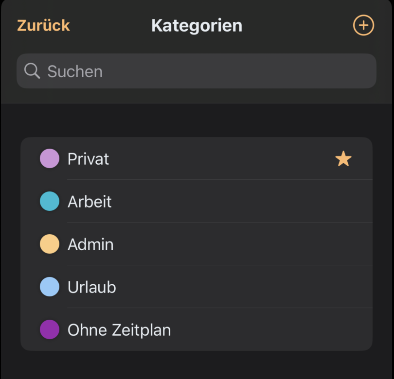
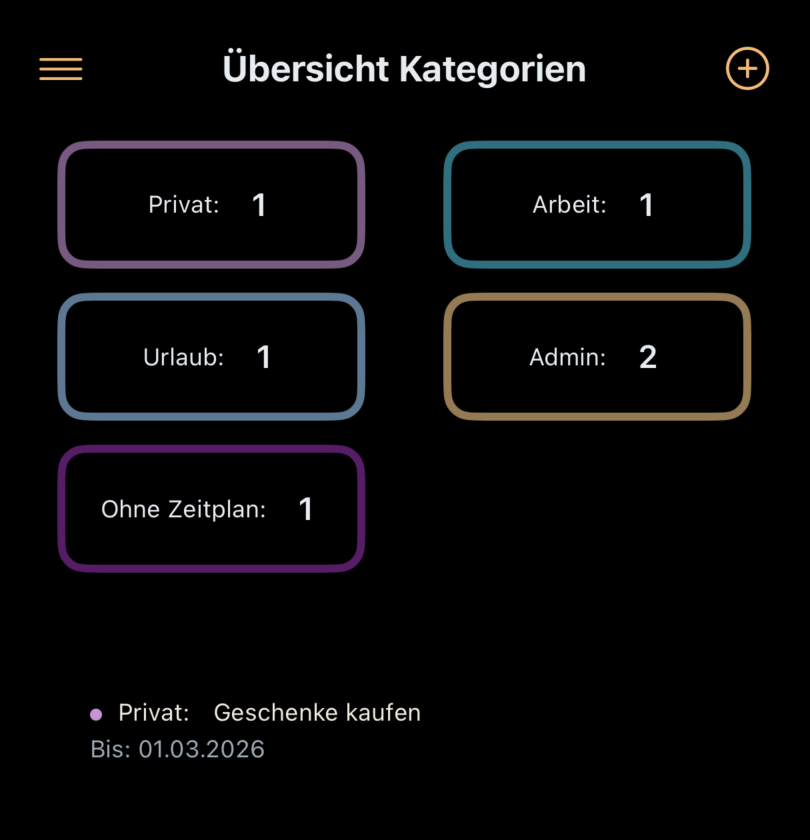

Clara BrainBuddy ist eine App, die speziell für neurodivergente Personen entwickelt wurde, um diese bei der Planung und Organisation ihres Tages zu unterstützen. Die App bietet verschiedene Funktionen, die Dir helfen, Deine Aufgaben zu erledigen.
Tipps zur Tagesplanung
Um das Beste aus deiner Tagesplanung herauszuholen, beachte folgende Hinweise:
1. Tagesplanung
Packe nur die Aufgaben in deine Tagesplanung, die du wirklich an diesem Tag erledigen möchtest.
Alles, was du später machen möchtest oder erledigen musst, sollte in die Langzeitplanung (alle Aufgaben) verschoben werden.
Du kannst nur eine bestimmte Anzahl an Aufgaben in Deine Tagesplanung packen. Wie viele das sind, bestimmst Du selber über die Einstellungen. Der Standardwert sind 10 Aufgaben maximal.
2. Reihenfolge der Aufgaben
Die Reihenfolge der Aufgaben in der Liste gibt die Reihenfolge der Bearbeitung an.
Die Aufgabe, die an oberster Stelle steht, hat die höchste Priorität.
3. Geschätzte Zeit
Gib bei Bedarf eine geschätzte Zeit für die Bearbeitung einer Aufgabe an, um zu wissen, ob du dir zu viel vorgenommen hast.
Wenn du keine Zeit angibst, wird eine Standardzeit von 15 Minuten berechnet. Du kannst diese Zeit über die Einstellungen anpassen.
Die App berechnet dann die benötigte Zeit für die Erledigung aller Aufgaben des Tagesplans und vergleicht sie mit Deinem persönlichen Zeitbudget für den aktuellen Tag.
4. Energy Impact
Nutze den "Energy Impact", um zu steuern, ob eine Aufgabe dir tendenziell mehr Energie gibt oder ob du viel Energie für die Erledigung aufwenden musst.
Die App zeigt dann an der Aufgabe ein passendes Batteriesymbol an.
Plane zwischendrin immer auch Aufgaben ein, die Dir wieder Energie zurückgeben.
Aufgabenplanung
Erstellen von Aufgaben
Du kannst neue Aufgaben durch den Plus-Button erstellen.
Priorisieren von Aufgaben
Mit der Drag-and-Drop-Funktion kannst Du die Bearbeitungsreihenfolge Deiner Aufgaben festlegen.
Die höchste Priorität hat - ganz einfach - die Aufgabe, die ganz oben steht.
Aufgaben neu sortieren
Diese Funktion sortiert deine Aufgaben neu. Wenn Du Probleme mit Deinen Exekutivfunktionen hast, dann hilft es mit den einfachsten Aufgaben zu erst anzufangen. Diese Funktion unterstützt Dich dabei.
Erledigte Aufgaben werden nach unten sortiert.
Die restlichen Aufgaben werden nach der geschätzten Zeit für die Bearbeitung sortiert. Die mit der niedrigsten Bearbeitungszeit stehen oben.
Aufgaben ohne geschätzte Zeit erhalten eine standardmäßige Zeit, die du selbst in den Einstellungen festlegen kannst.
Bei gleicher geschätzter Zeit wird nach dem Fälligkeitsdatum sortiert.
Markieren von Aufgaben als erledigt
Wenn Du eine Aufgabe erledigt hast, kannst Du sie durch Swipen nach rechts als erledigt markieren.
Die Aufgabe wird durchgestrichen und Du erhältst ein haptisches Feedback durch zweimaliges Vibrieren.
Entfernen von Aufgaben
Um eine Aufgabe aus dem Tagesplan zu entfernen, aber nicht komplett zu löschen, swipe die Aufgabe einfach nach links.
Es öffnet sich ein Kontextmenü.
Dort kannst Du die Aufgabe auch durch Klick auf den Mülleimer direkt löschen.
Kalenderintegration - Benachrichtigung bei Terminen
Wenn Du Termine in Deinem Kalender für den aktuellen oder den nächsten Tag hast, wird eine Glocke in der Navigationsleiste des Tagesplans angezeigt.
Durch Klicken auf die Glocke kannst Du die Termine ansehen.
Swipe die angezeigten Termine einfach nach rechts, um sie in die Tagesplanung zu übernehmen.
Zeitbudgetregler
Der Zeitbudgetregler hilft dir, deine Arbeitsbelastung zu verwalten.
Wenn du wenig Zeit hast, d.h. deine exekutive Kapazität gering ist, kannst du nur eine begrenzte Anzahl von Aufgaben erledigen.
Die geschätzte Zeit wird in rot angezeigt, wenn du ein bestimmtes Limit überschreitest, das auf deinem Zeitbudget basiert. Die mittlere Einstellung bedeutet, dass du 1,5 bis 3 Stunden verfügbar hast. Die hohe Einstellung bedeutet, dass du an diesem Tag viel erledigen kannst.
Es gibt jedoch auch hier ein Limit, damit du siehst, wenn dein Tagesplan zu voll ist.
Erledigte Aufgaben
Wenn Du die erste Aufgabe aus der Tagesplanung erledigt hast, erscheint ein gelber Haken in der Navigationsleiste.
Durch Klicken auf diesen Haken öffnet sich ein Infofenster, das Dir einen Überblick über Deine erledigten Aufgaben gibt. In diesem Infofenster siehst Du die Anzahl der erledigten Aufgaben und die insgesamt benötigte Zeit.
Zusätzlich gibt es einen Button, mit dem Du alle erledigten Aufgaben aus der Tagesplanung auf einmal löschen kannst.
Apple Kurzbefehle Integration
Clara BrainBuddy unterstützt die Integration mit Apples Shortcuts (Kurzbefehle), um Dir noch mehr Flexibilität und Kontrolle über Deine Aufgaben zu geben.
Vordefinierte Shortcuts
Diese Kurzbefehle sind vordefiniert und können auch mit Siri verwendet werden.
Shortcut
Beschreibung
Erstelle Aufgabe
Erstellt eine neue Aufgabe. Alle Parameter außer dem Titel werden mit den Standardwerten vorgelegt. Die Aufgabe wird oben im Stapel aller Aufgaben hinzugefügt.
Für Heute
Erstellt eine Aufgabe, die im Tagesplan oben einsortiert wird.
Erledigen Bis
Erstellt eine Aufgabe mit einem Fälligkeitsdatum. Du kannst zusätzlich zum Titel ein Datum angeben, bis wann die Aufgabe erledigt sein muss.
Weitere Funktionen zum Verwenden in selbstdefinierten Kurzbefehlen
Anzahl erledigter Aufgaben: Dieser Shortcut gibt Dir einen Überblick über die Anzahl der erledigten Aufgaben.
Aufgabe mit allen Parametern erstellen: Dieser Shortcut erlaubt es Dir, eine Aufgabe mit allen verfügbaren Parametern zu erstellen. Wenn Du das Datum zu erledigen bis leer lässt, wird die Aufgabe für heute eingeplant.
Erste zu erledigende Aufgabe: Gibt die oberste noch zu erledigende Aufgabe aus der Tagesplanung zurück. Oder den Hinweistext "Keine Aufgaben für heute geplant", wenn es keine zu erledigenden Aufgaben gibt.
Selbstdefinierte Kurzbefehle
Check Todos
Dieser Shortcut prüft, ob Du mehr als X Aufgaben erledigt hast. Im Moment ist X mit 5 voreingestellt. Du kannst es aber auch auf einen von Dir favorisierten Wert umändern.
Wenn Du nicht die erforderliche Anzahl an Todos erledigt hast, fragt der Shortcut die oberste Aufgaben aus der Tagesplanung ab und fügt diese in einen Hinweistext ein. Wenn es keine zu erledigenden Aufgaben gibt, wird leer zurückgegeben und der Kurzbefehl beendet sich.
Du kannst diesen Kurzbefehl nutzen, um beispielsweise eine Sperre vor Social-Media Apps einzubauen, wenn Du noch nicht genügend Aufgaben an diesem Tag erledigt hast. Wie Du eine solche Sperre einrichtest, wird im nächsten Abschnitt beschrieben.
Hey there, it‘s me, Clara 🐿️,
You are about to open <AppName>. ✨💕
Would you like to take a look at your tasks first?
Maybe there is one thing left to be done 🫶
<Erste zu erledigende Aufgabe>
Du kannst Dir den Hinweistext individuell gestalten, in dem Du den Kurzbefehl nach dem Laden für Dich anpasst.
Typische Aufgabensets
Mit diesem Shortcut kannst Du eine Liste von typischen Aufgaben erstellen, die immer wieder, aber nicht ganz regelmäßig ausgeführt werden.
Beispiele für Aufgaben in so einem Set wären:
Tasche packen
Frühstücken
Lunchpaket machen und einpacken
Lüften
Schlüssel mitnehmen
Licht ausschalten
Du kannst einen solchen oder ähnlichen Shortcut erstellen, in drm Du folgende Schritte ausführst:
Öffne die Shortcuts App auf Deinem iPhone.
Tippe auf das "+"-Symbol, um einen neuen Shortcut zu erstellen.
Tippe auf "Aktion hinzufügen" und suche nach der Aktion "Erstelle Aufgabe".
Füge einen Titel hinzu, der einem deiner Aufgabe aus deiner zu erstellenden Liste entspricht, z.B.: "Tasche packen"
Wiederhole das für alle Aufgaben, die Du in Dein Set packen willst.
Wenn Du weitere Parameter setzen willst, verwende stattdessen die Aktion "Erstelle Aufgabe mit allen Parametern".
Speichere den Shortcut unter einem passenden Namen.
Du kannst Dir auch ein eigenes Symbol für diesen Kurzbefehl definieren
Du kannst den Shortcut jederzeit anpassen, indem Du neue Aufgaben hinzufügst oder bestehende bearbeitest.
Aufgabenliste
Mit diesem Kurzbefehl kannst Du eine Aufgabenliste erstellen, aus der Du eine einzelne Aufgabe auswählen kannst, um sie in Deine Tagesplanung zu übernehmen.
Dies könnte beispielsweise organisatorische Aufgaben oder Haushaltsaufgaben sein, die Du regelmässig aber nicht zu vordefinierten Zeiten erledigen willst.
Beispiel:
Einkaufen
Rechnungen bezahlen
Spülmaschine anschmeißen
Spülmaschine ausräumen
Wäsche anschmeißen
Um einen Kurzbefehl anzulegen, der es dir ermöglicht, Aufgaben aus einer vordefinierten Liste auszuwählen und in deine Tagesplanung zu integrieren, folge diesen Schritten:
Öffne die Shortcuts App auf Deinem iPhone.
Tippe auf das "+"-Symbol, um einen neuen Shortcut zu erstellen.
Tippe auf "Aktion hinzufügen" und suche nach der Aktion "Liste".
Lege in der Liste die Aufgaben fest, die Du zur Auswahl stellen willst.
Suche nach der Aktion "Aus Liste wählen" und füge sie dem Kurzbefehl hinzu.
Als letztes suche die Aktion "Aufgabe für heute" und füge sie hinzu.
Setze als "Aufgabe" in dieser Aktion das "Ausgewählte Objekt".
Speichere den Shortcut unter einem passenden Namen.
Du kannst Dir auch ein eigenes Symbol für diesen Kurzbefehl definieren.
Du kannst den Shortcut jederzeit anpassen, indem Du neue Einträge in der Liste hinzufügst oder bestehende bearbeitest.
App-Automation
Mit Apples Automation kannst Du den "Check Todos"-Kurzbefehl verwenden, um eine Sperre für Social-Media-Apps einzurichten.
Automation erstellen:
Öffne die Shortcuts App auf Deinem iPhone.
Gehe zum Tab "Automation" und tippe auf das "Neue Automation", um eine neue Automation zu erstellen.
App starten:
Wähle die Aktion "App" aus.
Wähle unter "Wenn" nun die Social-Media-App aus, die Du sperren möchtest.
Setze den Haken bei "geöffnet wird".
Setze die Option "Sofort ausführen".
Klicke auf "Weiter"
Aktion hinzufügen:
Suche nach dem "Check Todos"-Kurzbefehl.
Füge den "Check Todos"-Kurzbefehl zu Deiner Automation hinzu.
Automation speichern:
Speichere die Automation.
Jetzt wird jedes Mal, wenn Du versuchst, die Social-Media-App zu öffnen, der "Check Todos"-Kurzbefehl ausgeführt. Wenn Du noch nicht genügend Aufgaben erledigt hast, erhältst Du eine Erinnerung und kannst entscheiden, ob Du zuerst Deine Aufgaben erledigen möchtest.
Regelmäßige wiederkehrende Aufgaben
Erstellen und Verwalten von regelmäßigen Aufgaben
Du kannst regelmäßige Aufgaben definieren, die automatisch in Deinem Tagesplan auftauchen.
Verschiedene Arten von wiederkehrenden Aufgaben
Täglich
Wöchentlich mit Festlegung des Wochentages
Monatlich mit Festlegung des Tages 1..31
Gerade Wochentage (Wochenende ausgenommen)
Ungerade Wochentage (Wochenende ausgenommen)
Integration in den Tagesplan
Durch einfaches Swipen nach rechts kannst Du diese regelmäßige Aufgaben in Deinen Tagesplan übernehmen.
Langzeitplanung (Stapel aller zu erledigenden Aufgaben)
Übernehmen von Aufgaben in die Tagesplanung
Die Ansicht "Alle Aufgaben" gibt Dir eine Übersicht mit allen von Dir erstellten Aufgaben. Aus dieser kannst Du Aufgaben in Deine Tagesplanung übernehmen. Wähle die Aufgabe in der Übersicht aller Aufgaben aus und swipe nach rechts und tippe auf das Kalendersymbol. Damit verschiebst Du die Aufgabe in den Tagesplan.
Wenn Du eine Aufgabe in die Tagesplanung übernommen hast, wird diese Aufgabe blau markiert. Aufgaben, die bald erledigt sein müssen, werden orange dargestellt. Eine überfällige Aufgabe wird rot markiert. Die zusätzlich angezeigten Emojis kannst Du über die Einstellunge ausblenden, wenn Sie Dich stören.
Weitere mögliche Aktionen
In der Ansicht "Alle Aufgaben" hast Du verschiedene Optionen, um mit Deinen Aufgaben zu interagieren:
Swipe nach rechts: Es öffnet sich ein Menü mit folgenden Optionen:
Kalender (Blau): Übernimmt die Aufgabe in den Tagesplan.
Bleistift (Grün): Hiermit kannst Du die Aufgabe bearbeiten.
Teilen (Türkis): So kannst Du die Aufgabe mit anderen teilen, die die Aufgabe dann wieder bei sich importieren können.
Kopieren (Hellblau): Kopiert den Inhalt der Aufgabe.
Duplizieren (Grau): Dupliziert die Aufgabe.
Swipe nach links: Löscht die Aufgabe.
Prokastination / Widerstand gegen Aufgaben
Mit Clara BrainBuddy kannst du erkennen, wenn du eine Aufgabe immer wieder aufschiebst. Das hilft dir, Aufgaben zu identifizieren, die dir besonders schwerfallen oder die du vielleicht neu planen solltest.
Wie funktioniert der Widerstands-Balken?
Wiederholtes Aufschieben: Wenn du eine Aufgabe mehrmals in deine Tagesplanung übernimmst, aber nicht erledigst und dann wieder in die Langzeitplanung zurückschiebst, zeigt die App einen Widerstands-Balken an.
Visuelle Darstellung: Der Balken wird mit jedem Aufschieben länger und ändert seine Farbe:
Gelb: Leichter Widerstand – die Aufgabe wurde einmal aufgeschoben.
Orange: Mittlerer Widerstand – die Aufgabe wurde mehrmals aufgeschoben.
Rot: Hoher Widerstand – die Aufgabe wird häufig aufgeschoben und sollte überdacht werden.
Automatische Erhöhung: Zukünftig wird der Widerstand auch erhöht, wenn eine Aufgabe länger als einen Tag in der Tagesplanung bleibt, ohne erledigt zu werden.
Widerstands-Balken anpassen
Falls du diese Funktion nicht nutzen möchtest, kannst du die Anzeige des Widerstands-Balkens in den Einstellungen ausblenden. In den Einstellungen von Clara BrainBuddy kannst du außerdem viele weitere Funktionen nach deinen Bedürfnissen anpassen.
Aufgaben nicht aus dem Fokus verlieren
Wenn Du die App startest, zeigt Clara BrainBuddy Dir zufällig eine Aufgabe aus der "Alle Aufgaben" Liste an, die noch nicht erledigt wurde und nicht in der Tagesplanung enthalten ist. Diese Funktion hilft Dir, Aufgaben zu entdecken, die Du vielleicht vergessen hast oder die nicht dringend sind, aber trotzdem erledigt werden sollten.
Diese Funktion ist besonders nützlich, um Aufgaben, die oft übersehen oder aufgeschoben werden, wieder in den Fokus zu rücken. Sie unterstützt Dich dabei, einen besseren Überblick über alle anstehenden Aufgaben zu behalten und sicherzustellen, dass auch weniger dringende Aufgaben nicht in Vergessenheit geraten.
Du hast mehrere Möglichkeiten mit dieser Aufgabe umzugehen:
Zum Löschen nach links wischen: Wenn Du die Aufgabe nicht behalten möchtest, weil sie beispieweise inzwischen irrelevant geworden ist wische nach links, um sie direkt zu löschen. Das kann Dir helfe Deinen Aufgabebstapel aufgeräum zu halten.
Zum Behalten aber niedriger priorisieren nach rechts wischen: Wenn Du die Aufgabe behalten möchtest, aber nicht sofort erledigen möchtest, wische nach rechts, um sie zu behalten, aber auch niedriger zu priorisieren. Sie rückt dann in der Liste immer weiter nach unten.
Oder antippen, um für heute auszuwählen: Wenn Du die Aufgabe heute erledigen möchtest, tippe einfach auf die Aufgabe, um sie in Deine Tagesplanung zu übernehmen.
Menü
Im Menü von Clara BrainBuddy findest Du verschiedene Optionen, um die App zu steuern und zu konfigurieren.
Menüpunkt
Beschreibung
Zeitnahe Ereignisse
Zeigt alle Ereignisse von heute und morgen an. Du kannst sie durch Swipen nach rechts in Deine Tagesplanung übernehmen. Die Dauer des Ereignisses wird als geschätzte Zeit für die Zeitbudgetberechnung übernommen. Ganztagesevents werden ohne geschätzte Zeit übernommen.
Öffne Kalender
Öffnet den iPhone Kalender.
Einstellungen
Hier findest Du verschiedene Einstellungen, um Clara BrainBuddy zu customizen.
Exportiere alle Aufgaben
Exportiert alle Aufgaben in eine Datei, die Du z.B. zur Sicherung verwenden kannst.
Importieren
Importiert Aufgaben aus einer Datei.
Über
Informationen über die App.
Eisenhower-Matrix
Die Eisenhower-Matrix hilft Dir, alle Aufgaben des Tages nach Dringlichkeit und Wichtigkeit zu sortieren. So kannst Du besser entscheiden, welche Aufgaben Vorrang haben und wie Du Deine Tagesplanung anpasst.
Mit der Matrix kannst Du jede Aufgabe einem der folgenden Felder zuordnen:
Dringend & Wichtig: Diese Aufgaben bleiben in Deiner Tagesplanung und werden ganz oben einsortiert.
Dringend: Diese Aufgaben bleiben ebenfalls in der Tagesplanung, werden aber weiter unten einsortiert.
Wichtig: Diese Aufgaben werden aus der Tagesplanung entfernt und oben in der Übersicht „Alle Aufgaben“ eingefügt, damit Du sie später bearbeiten kannst.
Weder Dringend noch Wichtig: Diese Aufgaben werden ebenfalls aus der Tagesplanung entfernt und unterhalb der wichtigen Aufgaben in der Übersicht „Alle Aufgaben“ eingefügt.
Nach dem Zuordnen werden die Aufgaben automatisch neu sortiert, sodass Du Dich auf das Wesentliche konzentrieren kannst.
Kategorien
In Clara kannst du über das Menü Kategorien anlegen und pflegen.

Jeder Kategorie kann eine Farbe zugeordnet werden.
Du kannst eine Kategorie als Standard festlegen.
Beim Anlegen von Aufgaben und wiederkehrenden Aufgaben kannst du eine Kategorie auswählen; die Standard‑Kategorie ist (falls vorhanden) bereits vorbelegt.
Beim Anlegen von Aufgaben über Apple Kurzbefehle (Shortcuts) wird die Standard‑Kategorie – falls vorhanden – automatisch vorbelegt.
Übersicht in der Navigationsleiste
Sobald mindestens eine Kategorie existiert, erscheint eine zusätzliche Übersicht in der Navigationsleiste.

Alle Kategorien werden als farbige Kästchen/Bubbles angezeigt. Jedes zeigt den Namen und die Anzahl der zugeordneten Aufgaben.
Tippe/Klicke auf ein Kästchen, um unten die Liste der Aufgaben dieser Kategorie einzublenden.
In der Liste kannst du Aufgaben löschen, für heute auswählen oder zum Bearbeiten öffnen.
Benachrichtigungen
Clara BrainBuddy erinnert dich automatisch morgens und abends an deine Aufgaben:
Morgens: Eine Erinnerung, in die App zu schauen, um zu sehen, was heute ansteht.
Abends: Eine Erinnerung, um zu überprüfen, ob du alles erledigt hast.
Die Zeiten für diese Benachrichtigungen kannst du in den Einstellungen von Clara individuell anpassen. Falls dich die Benachrichtigungen stören, kannst du sie in den Einstellungen von Apple iOS ausschalten.